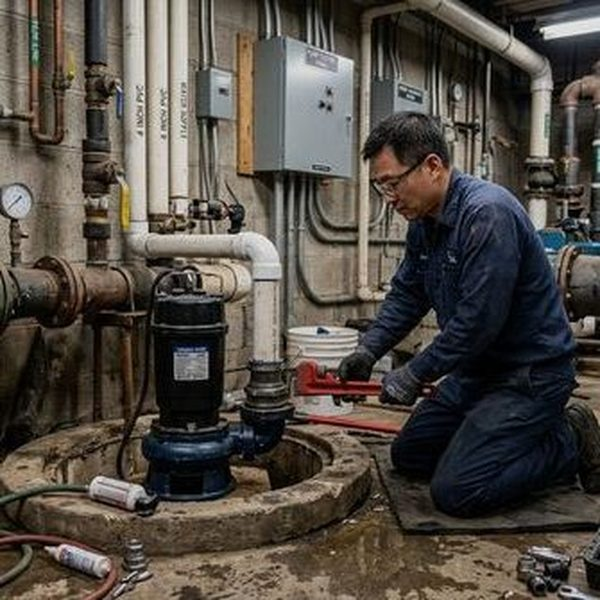
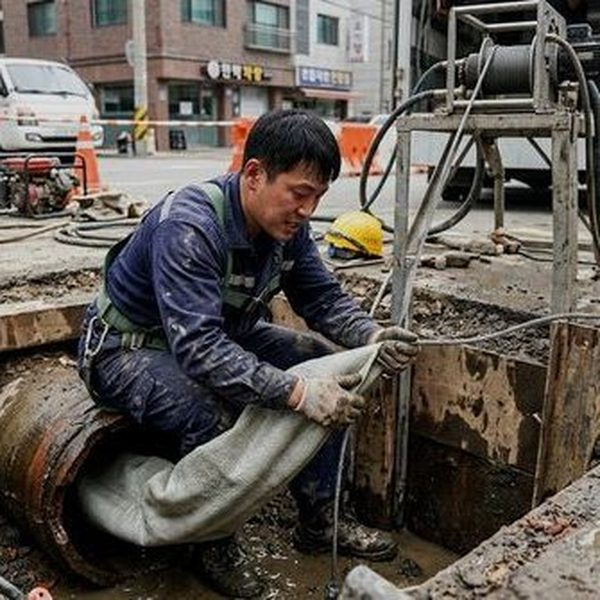

제우스시설관리 | 2025년 4월

머리카락 축적이 가장 흔한 원인입니다. 칫솔질 시 뱉어지는 미세한 입자, 비누 찌꺼기, 치약 잔여물도 배수를 방해합니다. 또한 오래된 배관에서는 녹과 침전물이 배관 내벽에 붙어 관경을 좁힙니다.
✅ 1단계: 트랩 청소 - 싱크대 아래 U자형 트랩의 나사를 풀어 내용물 제거
✅ 2단계: 머리카락 제거 - 배수 입구의 망에 걸린 머리카락 제거
✅ 3단계: 뜨거운 물 세척 - 60도 정도의 따뜻한 물을 2~3분 흘려보냄
✅ 4단계: 진공 청소 - 플런저를 이용하여 배수 입구 주변의 공기 압력으로 제거 (권장 X)
세면대 배수 입구에 걸러진 망을 설치하면 대부분의 머리카락을 차단할 수 있습니다. 또한 주 1회 뜨거운 물을 흘려 보내면 비누와 치약 찌꺼기 축적을 방지합니다.
DIY로 해결되지 않거나, 배수 입구 아래에서 냄새가 나거나, 배수가 역류하는 경우는 전문가 상담이 필요합니다. 배관 자체의 손상이나 깊은 막힘일 수 있습니다.
제우스시설관리는 내시경으로 배관 상태를 먼저 확인한 후, 드레인 기계로 정확하게 청소합니다. 배관 손상 없이 완전히 막힘을 제거할 수 있습니다.
세면대 배수 문제는 조기에 해결할수록 배관 손상을 줄일 수 있습니다. 느린 배수가 느껴지면 바로 조치하세요.
